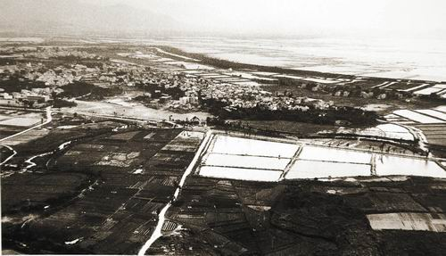
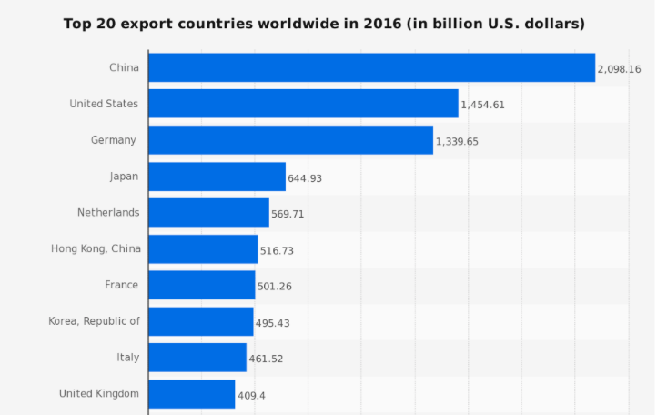

In the long term, Deng's agricultural and economic reforms allowed China's economy develop into what it is today.
Economic Zones Become Cities
|

Shenzhen 1980
|

Shenzhen 2015
|
SEZs, attracting foreign investment, and therefore rapidly expanding consumer-goods industries, growing populations, and foreign projects, became major cities. Additionally, agricultural decollectivization caused rural populations to move to towns and cities.
". . . special economic zones had the first foreign-funded large scale real estate development project, the first foreign-funded commercial basic facilities construction project, the first foreign-funded commercial retail company. . . In edition, the special economic zones piloted various factor markets, including the first labor market, foreign exchange market, etc. Many of these were later duplicated by other provinces and localities."
- Sheying Chen, Special Economic Zones and Globalization of Chinese Cities,
- Sheying Chen, Special Economic Zones and Globalization of Chinese Cities,
Mixed State-Owned and Private Economy

|

|
China's growing number of private enterprises continue to promote economic growth, entrepreneurship, and competition. Despite this, China still has a number of state-owned enterprises, most notably in the mining and fuel sectors. In addition, all land remains public property available for rent and lease by the government, displaying the hybridized nature of China's economy.
“. . . new forms of entrepreneurship emerged, creating economic growth and opportunities for individuals to start to generate wealth. . . . China was growing rapidly. . . over this period, more people came out of the international definition of global poverty in China than the rest of the world. . . . the private sector was recognized formally as a national ‘pillar’ of the economy and society, largely because it was seen as a key source of job creation.”
-
-
China's Manufacturing and Export Economy
|
From the 80s into the 21st century, China's manufacturing economy has boomed as a result of agricultural decollectivization, foreign investment, and price reforms.
The [agricultural] reforms also gave greater room for private ownership of production, and these privately held businesses created jobs, developed much-wanted consumer products, earned important hard currency through foreign trade, paid state taxes, and gave the national economy a flexibility and resiliency that it did not have before. . . .
- Zuliu Hu & Mohsin S. Khan, International Monetary Fund Report |
|
China's open-door policy has added power to the economic transformation. . . . This foreign money has built factories, created jobs, linked China to international markets, and led to important transfers of technology. . . . new machinery, better technology, and more investment in infrastructure have helped to raise output.
- Zuliu Hu & Mohsin S. Khan, International Monetary Fund Report
|

Statistica
|
Today, China comprises nearly a third of the world's manufacturing GDP and is the world's largest exporting country (by $ value).
The Chinese authoritarian-capitalist model wasn’t supposed to survive in a global free market. . . Today, China’s political and economic system is better equipped and perhaps even more sustainable than the American model. . . China’s ability to use state-owned companies to boost the party’s domestic and foreign influence ensures that the emerging giant is on track to surpass U.S. GDP in 2029, according to the Center for Economics and Business Research.
- Ian Bremmer, Time (2017) |
Improving Standards of Living
|
Living standards have improved dramatically since Deng's economic reforms.
Since 1978, real per capita consumption in China has risen at an average annual rate of 7 percent which is more than three and a half times that of the preceding 21 years. . . . the standard of living of the average Chinese citizen in 1990 was more than double that of 1978.
- Joseph Chai, Consumption and Living Standards in China |
GDP Per Capita
|
. . . growth in China has averaged 10 percent a year, the poverty rate has fallen from 65 percent to 10 percent, all the Millennium Development Goals have been reached. . . It is now the World Bank that can draw from China’s experience – whether in infrastructure, education, rural development, forestry or energy – and employ this knowledge with other countries to overcome poverty in the world.
- Robert B. Zoellick, World Bank News (2010)

|
Although overall living standards improved, the distribution of wealth has grown uneven. Currently, China ranks the 30th most equal country out of 150 with a gini coefficient of around 47 (out of 100).
Inequality on the Gini scale is measured between 0, where everybody is equal, and 1 [or 100], where all the country's income is earned by a single person.
|